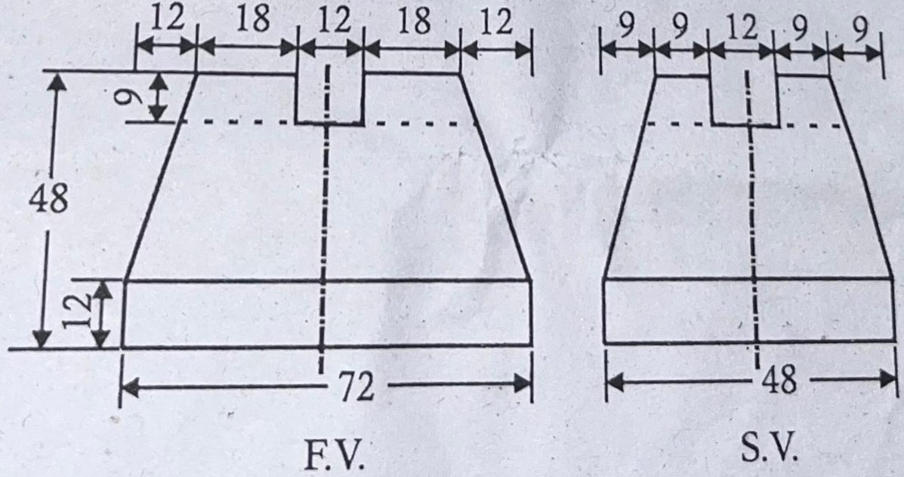

B.Tech. I & II Semester
Examination, June 2025
Grading System (GS)
Max Marks: 70 | Time: 3 Hours
Note:
i) Attempt any five questions.
ii) All questions carry equal marks.
a) Compare diagonal scale and Vernier scale in terms of construction and precision. Provide a situation in engineering where each is used.
b) A water tank of size 27 m³ was represented in the drawing by 216 cm³ size. Construct a Vernier Scale for the same to measure upto 5 meter. Also show on it the distance of 3.95 meter and 0.042 meter.
Answer (a): To be posted here.
Answer (b): To be posted here.
a) A coin 30 mm diameter rolls on a straight line on a table. Plot and name the locus of a point lying on the circumference for one complete revolution.
b) A line AB 70 mm long is inclined at an angle of $30^\circ$ to HP. Its end A is 10 mm above the HP and 15 mm infront of VP. The front view is 50 mm. Draw the projection of line AB.
Answer (a): To be posted here.
Answer (b): To be posted here.
a) Draw the projection of a regular hexagonal lamina of 30 mm side having one of its edge in the VP and inclined at $60^\circ$ to HP and the surface making an angle of $40^\circ$ with the VP.
b) Write about Dialog boxes and Windows in CAD software.
Answer (a): To be posted here.
Answer (b): To be posted here.
a) Draw the projection of a hexagonal prism base 30 mm and axis 75 mm long when its axis is inclined at $30^\circ$ to the VP and parallel to HP and edge of the base is perpendicular to HP.
b) What is meant by Projection? Explain the principle of projection and Differentiate between First Angle projection and Third Angle projection.
Answer (a): To be posted here.
Answer (b): To be posted here.
a) A hexagonal Pyramid side of base 30 mm and axis 60 mm long rest with its base on HP and one of the edge of its base is parallel to VP. It is cut by a horizontal section plane at a distance of 38 mm above the base. Draw its Front view and Sectional Top View.
b) A cone of base diameter 55 mm and axis 65 mm is lying on one of its generator on the horizontal plane with its axis parallel to VP. It is cut by a vertical plane section parallel to one of the generator and bisecting the axis. Draw its sectional front view and True shape of section.
Answer (a): To be posted here.
Answer (b): To be posted here.
a) Discuss how CAD software supports the visualization and creation of complex 3D objects such as compound solids. Include references to specific tools or features.
b) Draw the Floor plan of a single BHK house showing all details like window, doors and other fixtures. Assume suitable dimension for plan.
Answer (a): To be posted here.
Answer (b): To be posted here.
a) Discuss the construction and use of an Isometric Scale.
b) Draw the Isometric view of given figure.
Answer (a): To be posted here.
Answer (b): To be posted here.
Write short notes on any three of the following.
i) Epicycloid
ii) Traces of a line
iii) Tool bar
iv) View ports
Answer: To be posted here.